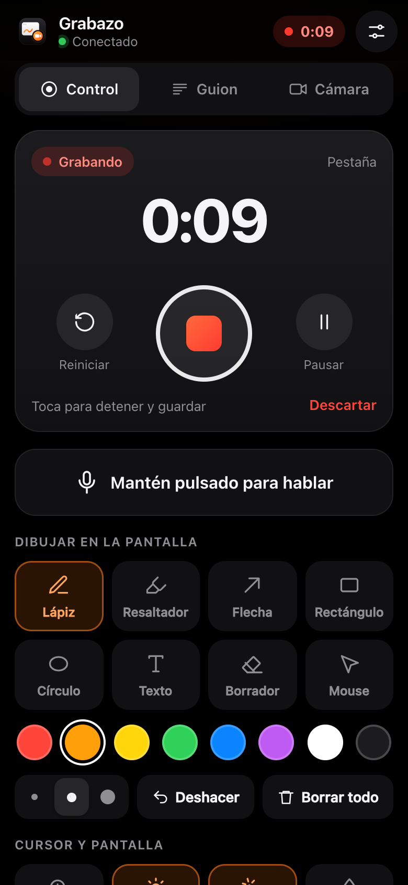

Graba, pausa y dibuja desde el celular
1Escanea el QR de Grabazo con tu celular.
2Graba, pausa, reinicia y elige lápiz, color, zoom o foco.
3Mantén «Hablar» para que el micrófono grabe solo tu voz.
ventas.example.com/resumen

